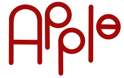
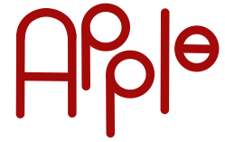

Drawings & Graphics
Series Project
For this themed project, I created a cohesive set of three hand-drawn images that visually
connect through style and subject.
After completing the drawings, I scanned them and used Adobe Photoshop to enhance the colors,
refine details, and unify the overall look.
The result is a visually consistent trio that showcases both my traditional illustration skills
and digital editing techniques.
Skills utilized
- Hand-drawn illustration techniques
- Composition and visual storytelling
- Adobe Photoshop: layers, color correction, and filters
- Scanning and digitizing artwork
- File formatting for print and digital display
- Time management and creative planning

This project was especially enjoyable because it allowed me to blend two of my favorite creative
processes—drawing by hand and refining artwork digitally. I loved the challenge of translating traditional
linework into polished digital art, and seeing how color and texture could transform the mood of the pieces.
It was a chance to experiment, be imaginative, and apply technical tools to bring my vision to life.
Collage Project
For this first project in my computer art class, I created a digital collage using Adobe Photoshop.
The goal was to combine multiple images into a single, cohesive composition. Since I was just beginning to learn the software, this project helped me get comfortable with Photoshop’s interface and basic tools like layers, masking, selection tools, and image adjustments.
I explored how to blend elements together using opacity, filters, and layering effects to create a surreal, mixed-media-inspired piece.
Skills Utilized
- Image selection and composition planning
- Adobe Photoshop: layers, masking, transform tools
- Image adjustments: brightness, contrast, hue/saturation
- Use of blending modes and opacity
- Basic selection and cropping techniques
- Creative problem-solving and experimentation
Travel Banner
For this travel banner project, I created a promotional design for Pantheon—a mysterious, cloud-based realm where minds are uploaded by choice, at the moment of death.
It was my first time using Adobe Illustrator, and I found the switch from Photoshop’s familiar
tools to Illustrator’s vector-based system challenging.
I used the pen tool, shape builder, and gradients to create a sleek, ethereal look.
 

AppleWood Website
In the early stages of my digital design journey, I worked on a project centered around a fictional website for a location of my choice—Applewood, Colorado.
I created a cohesive visual identity for the town by designing a custom logo with a matching color scheme inspired by the natural reds of apples, tying into both the name and local imagery.
I used a mix of photo editing applications to produce graphics and a short video animation that depicted a building under construction and a stylized apple forming over time.
This project helped me experiment with different tools and develop a basic understanding of visual branding, motion, and composition.